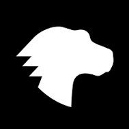

Leo's Homework Book of
MDN's
Front-end
Web Developer
DEV PALLETE VIEW
--colorPrimary
--colorPrimary Highlight
Hover & Focus
--colorPrimary Shade
--colorSquash
--colorSquash Highlight
Hover & Focus
--colorSquash Shade